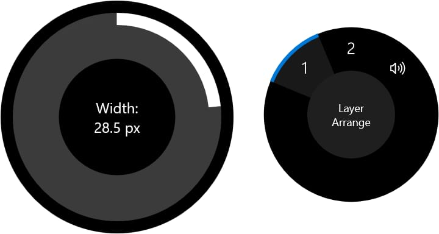
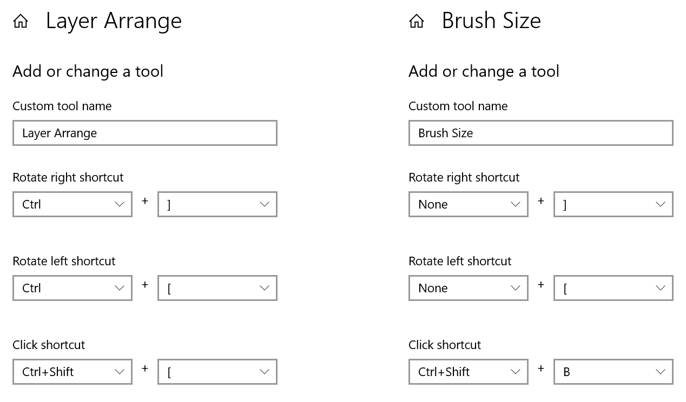

Microsoft's Surface Dial enables you to invoke Affinity menu commands and adjust tool settings by clicking and turning a rotary control.
To use it with your Affinity app, first follow Microsoft's instructions to connect it to your PC, then enable support in your Affinity app's preferences: select Tools and tick Enable Dial support.
After restarting the app, turning the dial while the Move Tool is selected will rotate the document in the view. Click the dial to reset the document's orientation.
With one of the Pixel, Erase or various other pixel-based brush tools selected, click Surface Dial to choose which attribute (brush width, accumulation, flow, and hardness) is adjusted by rotating the Dial. These tools display a large graphical overlay that provides clear feedback.

If a tool does not provide predefined Surface Dial gestures, you can assign choices in Windows' Settings app. Your custom commands are available from an on-screen menu, which appears when you press and hold down on the Dial.
Below are examples of how you might use Surface Dial in your workflow to control brush size and layer order. The walkthroughs at the bottom of this page explain how to implement these and other personalizations.

In the left example above, rotating the Dial moves the current layer back or forward progressively in the layer stack, while clicking it sends the layer all the way to the back.
In the right example, rotating the Dial adjusts brush size (as long as the appropriate tool is selected). The Click shortcut toggles the Brushes Panel; normally there is no keyboard shortcut assigned to this action, so you'll need to set the same key combination in your Affinity app's preferences.